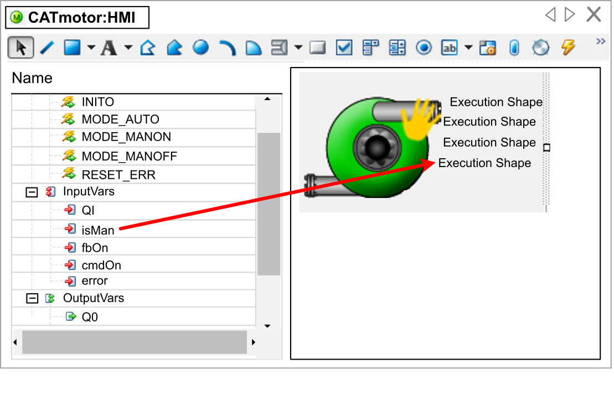

In addition, the Symbol Editor includes the view of the Interface Editor, which displays the ports of the CAT.

How to create a new HMI Symbol is described in the topic CAT. First create the symbol, then open the Symbol Editor by double-clicking the symbol in the Solution Explorer.
The Interface Editor as implemented in the Symbol Editor is read-only. The function of the Interface Editor is to let you create a graphical equivalent of a port by dragging an input or output variable into the drawing area. The ports cannot be modified here. If you want to modify them, open the CAT_HMI editor of the CAT by double-clicking the CAT_HMI function block in the Solution Explorer ).
While creating a graphical element, by dragging an input or output variable into the drawing area, the dialog Select Generic Symbol opens.
Depending on the type of the variable, various elements are offered for selection. These elements are automatically linked with the variable by the TagName property. In this way you can, for example, display the value of a variable of type REAL directly on the HMI or even modify it. Or you can also set a variable of type bool to true or false by actuating a button or just show the state of the variable in graphical form, and so on.